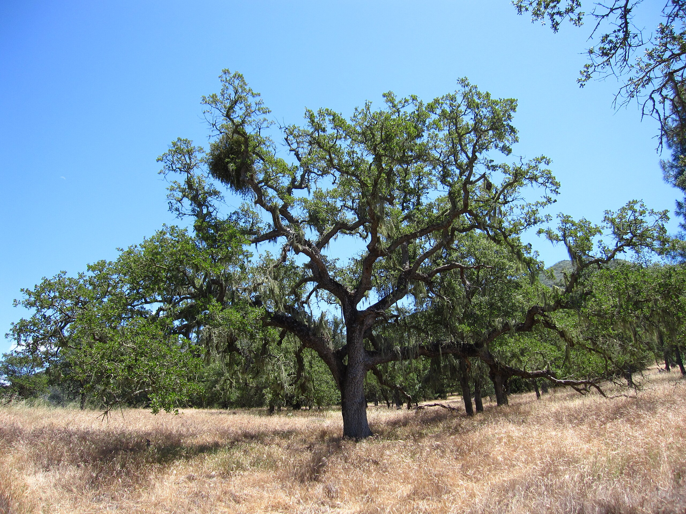
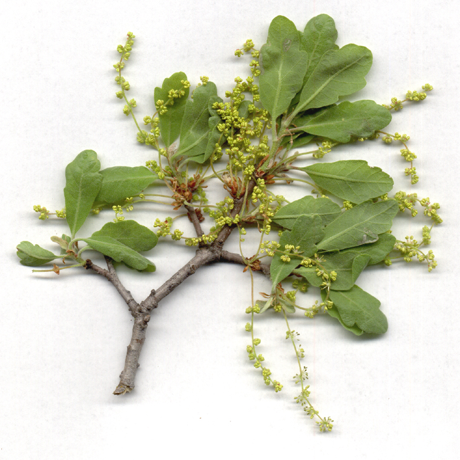
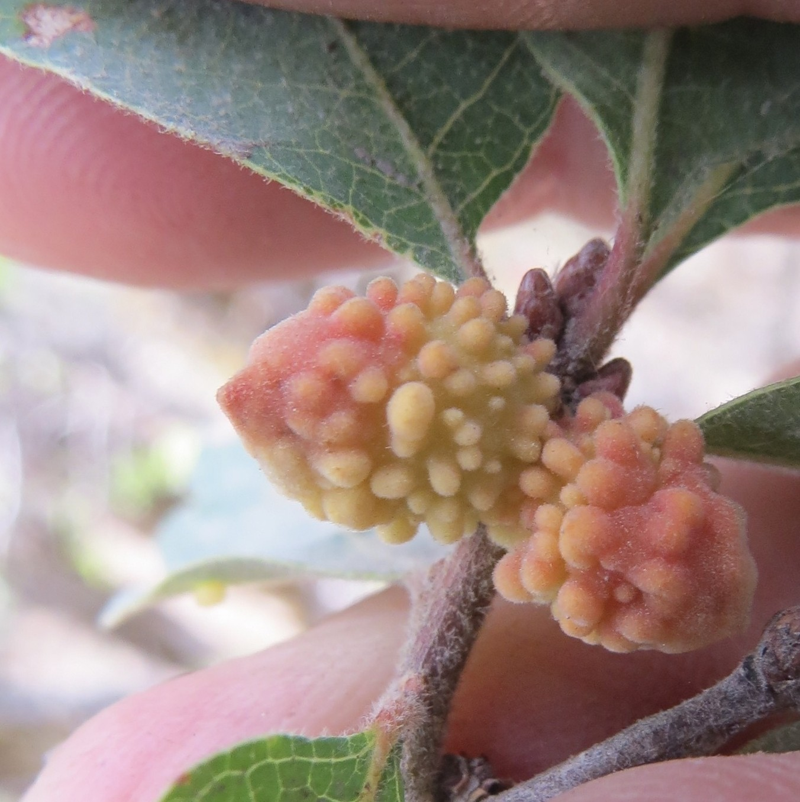

Pikí
Blue Oak (Quercus douglasii)
- Pikí is the most drought-tolerant of all deciduous oak trees in California.
- Pikí is called "blue oak" in English because of the dull, blue-green color of its leaves. You can identify pikí by the color and shape of the leaves, which have relatively shallow lobes compare to those of pallá (valley oak).

Blue Oak (photo by Chris M Morris, CC BY 2.0)

Blue Oak leaves (photo by Julie Kierstead, CC BY-NC 3.0)

❮
❯
Galls of Coral Gall Wasp on Blue Oak leaves (photo by Garth Harwood, CC BY 4.0)
- Pikí hosts a large variety of gall wasps, which trigger the formation of oak galls of various colors, shape, and sizes. Once the insect emerges from the gall, the gall can be dried, pounded, and used for medicinal purposes.
- The uutí (acorns) of pikí are not as highly prized as those of hámsɨ (black oak), but they can be added to mush made from other oaks for additional flavor.
Uutí
Acorn
Homodíbe mɨɨm? (Where is it?) You can find pikí growing in the arbor area. Look for the blue-green color of its leaves and their shallow lobes.
Esak’ahá daak’ábe mi c’aykɨ́ɨ? (Do you want to know more?) This webpage is part of a larger initiative to share signage highlighting plants found around the Shingle Springs Rancheria and their Nisenan names.
Webpage last updated: 2025-07-15